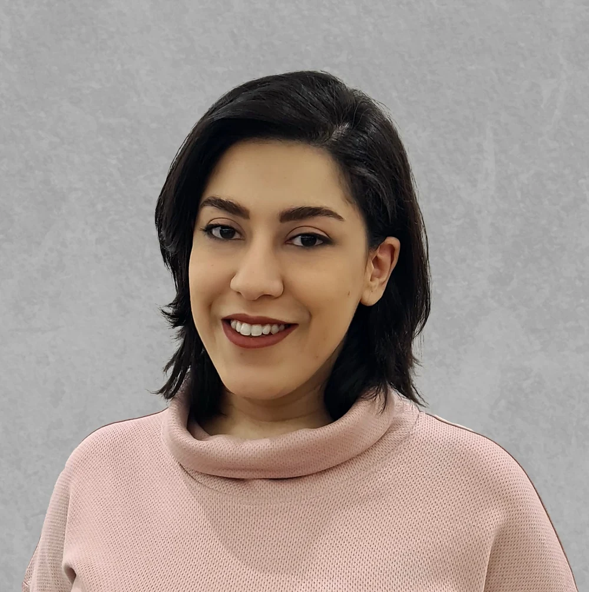

Content planning & channel strategy
Connect audience questions, content pillars, formats, and publishing priorities across the relevant platforms.
See the PayRafi approachAbout / Razieh Eslami
I’m a Social Media Designer & Strategist working across content planning, visual design, publishing, and performance review.
At PayRafi, I worked on a content system across Instagram, LinkedIn, and Telegram. At BodySense, I managed Instagram content from specialist-informed topics through to publishing and community responses.
I’m interested in the work between a complex subject and a clear message: deciding what matters, organizing it, and giving it a form that fits the audience and channel.

A connected skill set
Connect audience questions, content pillars, formats, and publishing priorities across the relevant platforms.
See the PayRafi approachTranslate a brand’s visual identity into posts, carousels, Stories, product guidance, and campaign assets.
See selected design workMove from topic discovery and research to expert review, visual execution, publishing, and audience responses.
See the BodySense workflowStructure a KPI framework, review available performance records, and turn findings into clear questions and next tests.
See the evidence and its limitsBackground
My background spans architecture, psychology, and cognitive science. It has shaped my interest in how information is organized and how people understand it.
In the work shown here, that interest takes a practical form: educational content developed with specialist input, connected publishing sequences, and visual structures that make complex topics easier to navigate.
Let’s talk about the audience, the brief, and what needs to happen next.